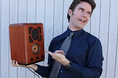
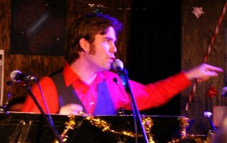

DAN OSTER
Actor / Contributing Writer

Dan Oster has the distinction of having been a Lost Moon fan before he was a Lost Moon actor. This makes him unbearable backstage as he continually asks his colleagues how they "do it.” In addition, Dan has worked as a cast member on the hit Fox television series MADtv, and performed in Amsterdam with famed sketch/improv theater Boom Chicago.
Fellow Moonies Jen Burton and Lauren Flans collaborate with Dan currently on the comedy website Titled Sketch Project. And he can be seen performing with them every week through TSP's live show division Jerk Circus. Click the links for more info!
Dan in Action...

In the Lost Moon Radio Holiday Show
Hitting the beat at the Chicken vs. Egg shoot.